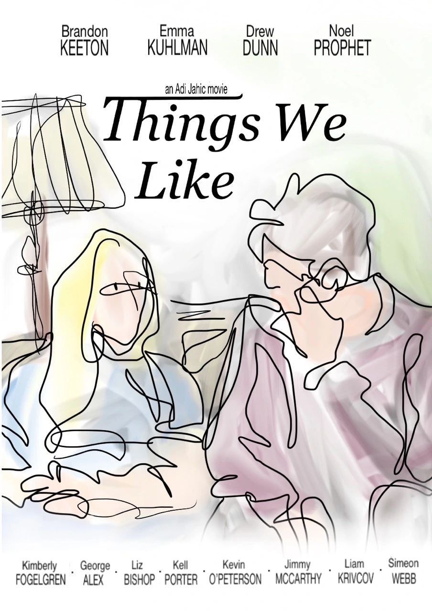
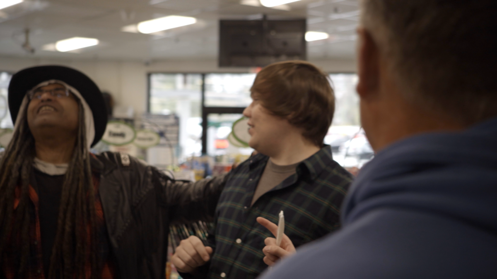
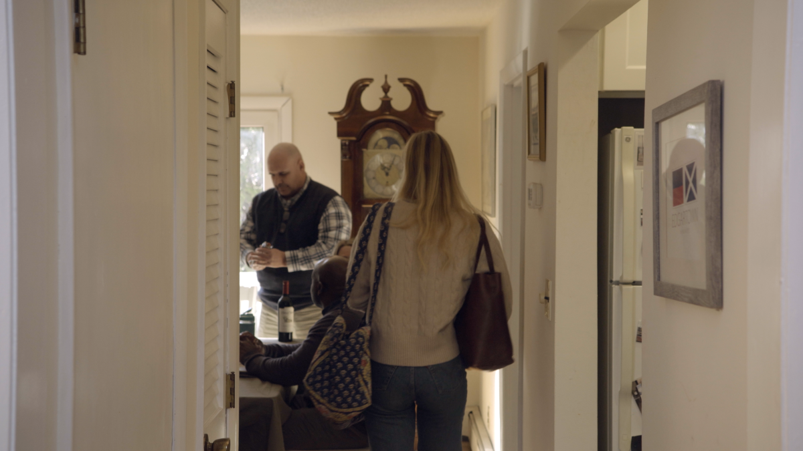
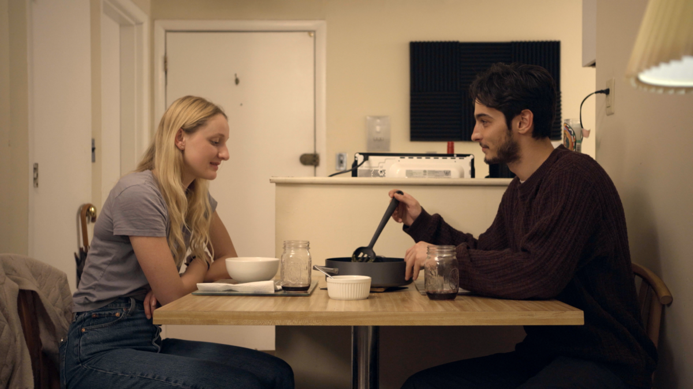

Feature film
Things We Like
When Georgia meets a young man from Boston, Peter, she leaves her mundane life in suburban Vermont searching for something more.
Synopsis
25-year-old Georgia (Emma Kuhlman) as she drives from Vermont to Boston to meet Peter (Jahić), a young man she knows exclusively through interacting on the internet.
Georgia has been stuck working a cubicle job for years. She rents a room from an older couple in the suburbs and desires change. With the opportunity to meet Peter in person, Georgia hits the road with no particular plan in mind. When she arrives, their night together develops in ways neither of them saw coming.
The film played in festivals and theatres in the U.S. and abroad, and was featured in several “Best of 2023” lists.
Reviews
Everything I see about youth these days makes me grateful to no longer be in it myself — and lord knows if it takes place in Boston, all the more so… [Things We Like] brought all that stuff back for me with great vividness. The whole thing is quite fragile… but the viewer who gets on its frequency will be rewarded. The whole cast is terrific, and the quirky structure is quite engaging. It really works. I really enjoyed this film. Andrew Bujalski
What a lovely film this is. Emotionally complex and endlessly surprising. Michael Glover SmithDirector of ‘Relative’ and more
A great debut film by an exciting young filmmaker. Frank V. RossDirector of ‘Audrey the Trainwreck’ and more
An incredibly sensitive and promising feature from Adi Jahić, Things We Like shows an ambition to explore messy emotions while refusing to define its characters in any narrow fashion and accepts them, foibles and all. You can sense that the filmmakers and the actors believe there is always something more to discover in even the most minor of supporting characters. This is a really impressive debut. Brett WrightFilm writer at Split Tooth Media
A wonderful, inspiring achievement. [Jahić] has made a remarkable film with lots of great moments throughout. Dr. Ray CarneyAuthor of ‘Cassavetes on Cassavetes’ and more
Coverage
- Split Tooth Media Review
- Split Tooth Media Podcast discussion
- To Each Their Own Cinema Interview with Adi Jahić
- Music City Drive-In “Things We Like is easy to love”
- Letterboxd
Stills



Festivals & screenings
Festivals & awards
- PremierePhiladelphia Independent Film Festival — Official Selection, 2023
- AwardWallachia International Film Festival — Best First-Time Filmmaker, 2023
- NominationChicago Indie Movie Awards — Best Picture Nominee, 2023
- SelectionSplit Tooth Media — Editor’s Pick, 2023
Cast & crew
Credits
- Written byAdi Jahić
- Directed byAdi Jahić
- StarringBrandon Keeton, Emma Kuhlman, Drew Dunn, Noël Prophet
- WithKimberly Fogelgren, George Alex, Liz Bishop, Kell Porter, Kevin O’Peterson, Jimmy McCarthy, Liam Krivcov, Simeon Webb
- ProducersSydney Clark, Sean Doucette
- CinematographyAndres Gedaly
- EditingAdi Jahić